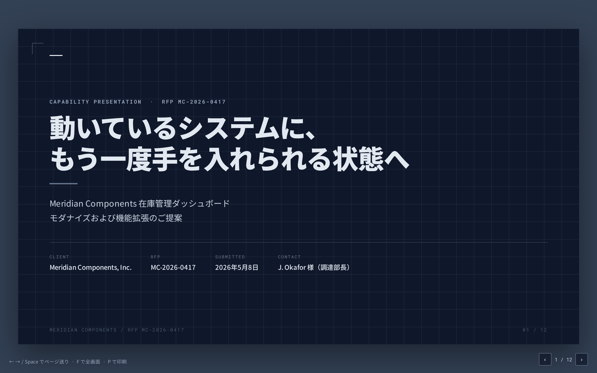
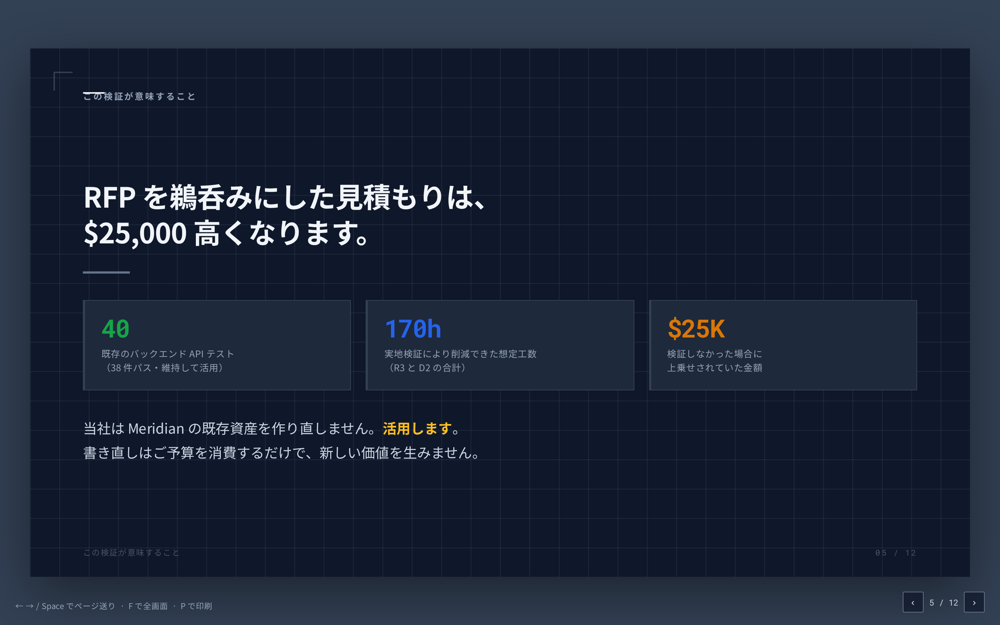
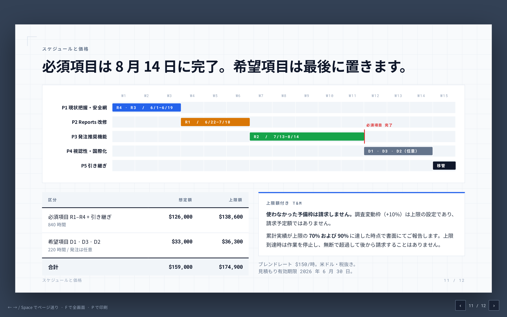
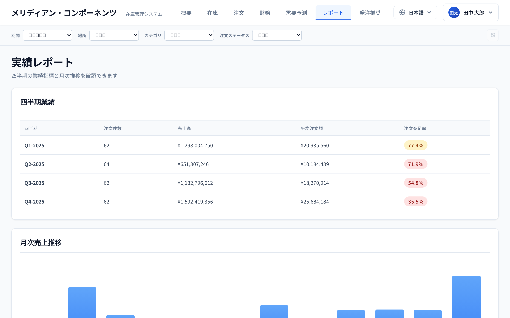
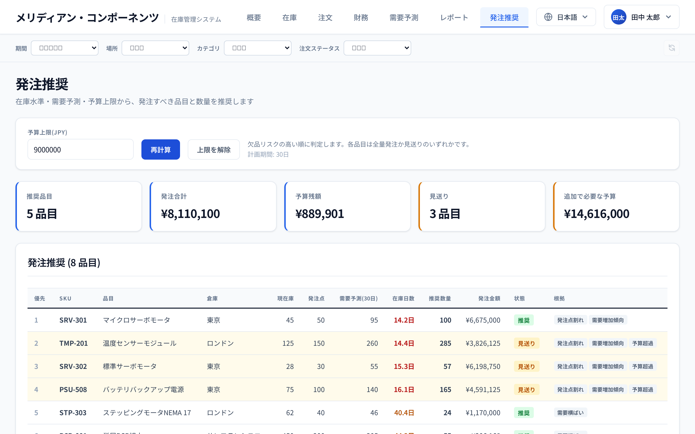
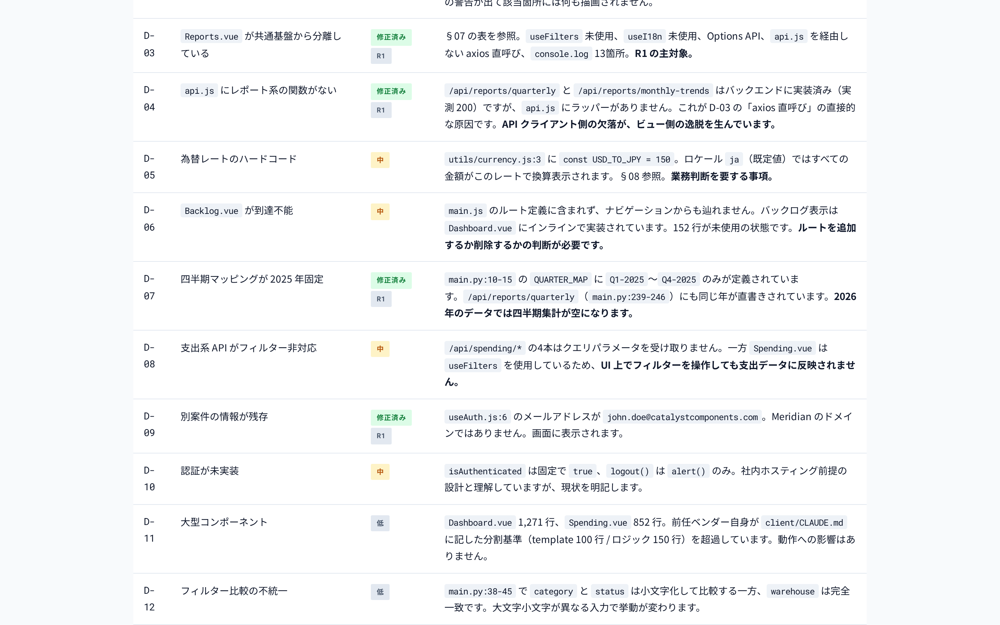
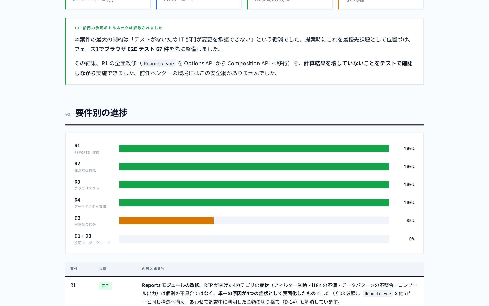
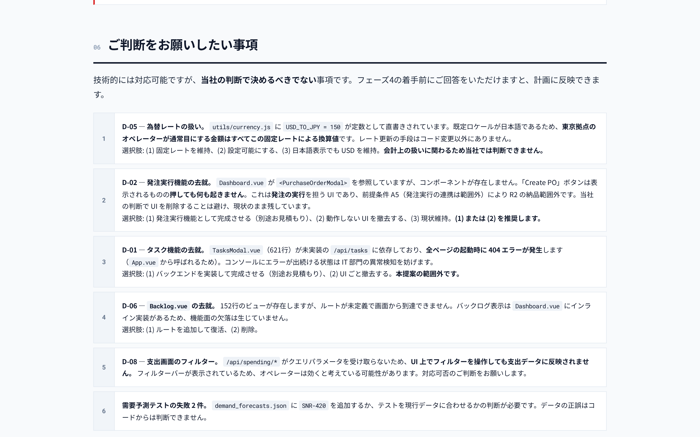

Meridian Components 在庫ダッシュボード案件を題材とした、提案書作成（課題1）と実装（課題2）の実施記録。Agenda の各段階について、狙い・進め方・要点・実績・成果物を記載します。
課題1（提案書作成）と課題2（実装）の両方を完了しました。課題2 では RFP の必須要件 R1〜R4 のすべてに対応しています。
| 区分 | Agenda 上の想定 | 実際 |
|---|---|---|
| 課題1 | RFP 解答案の作成（20分） | 提案書6点（エグゼクティブサマリー / 技術アプローチ / スケジュール / 価格 / 関連実績 / 12枚デッキ）を作成。約25分 |
| 課題2 | 「一つ目の大きい実装が終わる時点で止めてもOK」（25分目安） | 必須4要件すべてを完了。R4 → R3 → R1 → R2 の順。約1時間20分 |
| 進捗報告 | Claude Code に書かせる（5分） | HTML 進捗報告書（448行）を生成。約8分 |
| Plan Mode | 後半で活用 | 未実施 3回提案したが参加者が毎回スキップを選択（§07・§14 参照） |
| サブエージェント | — | 未実施 vue-expert を提示したが参加者が「そのまま書いて」を選択 |
実装の分量が Agenda の想定（25分・大きい実装1つ）を大きく超えました。必須4要件すべてに加え、E2E テスト基盤、アーキテクチャ文書、発注推奨ロジック仕様書、進捗報告書まで到達しています。
これは成功でもありますが、運営上は「議論の時間が削られる」リスクを意味します。振り返りの議論（§10）に充てる時間を確保するには、実装を意図的に区切る運営が必要です。§14 に申し送りを記載しました。
ファイル更新時刻とコミット時刻から再構成した概算です。後続の修正で上書きされた時刻を含むため、フェーズの境界は目安としてご覧ください。
docs/rfp/MC-2026-0417.md）を @ で読み込み、要求の整理とRFP の穴の指摘（UI 標準の未定義、予算レンジ未記載、主要フロー未特定）AskUserQuestion で確認事項4件を提示し、参加者がクライアント役で回答uv / node / npm がいずれも未導入と判明 → ホーム配下に導入（sudo 不要）/start を実行。サーバー起動。リモート環境対応（Vite プロキシ）を実施し、R1 の不具合1件を発見origin をフォークへ切替CLAUDE.md に環境チェック手順を追記（次回以降の運営資産）AskUserQuestion で3点合意 → 実装「Meridian Components から RFP が届いた。回答期限は3週間後」という2文で設定し、直後に @ によるファイル参照へ誘導しました。参加者が自分でパスを打ち込む形にしたため、最初の30秒で機能を1つ体験しています。
ここで「Claude Code とは」を説明し始めると、以降ずっとツールの話になります。役割と締切だけ与えて課題文に放り込むほうが、後の機能紹介が自然に効きます。
| 箇所 | 内容 | 見積もりへの影響 |
|---|---|---|
| R1 | 「少なくとも8件の問題」のリストが同梱されていない | 8件が全件か氷山の一角かで工数が数倍変わる |
| D1 | 「現在の標準に沿って」が未定義 | 参照すべきデザインシステムの有無が不明 |
| R3 | 「主要なユーザーフロー」が特定されていない | カバレッジの合格ラインが決まらない |
| §4-5 | 予算レンジの記載が一切ない | 提案の規模を決められない |
| 作業 | 人手の目安 | 今回の実測 |
|---|---|---|
| RFP と補足資料3点の読解・整理 | 1〜2時間 | 約7分 |
| コードベースの現状把握（約9,000行） | 1〜2日 | 約15分（R4 文書化を含む） |
| 提案書6点の初稿 | 2〜3日 | 約25分 |
| ケイパビリティ・デッキ12枚 | 半日〜1日 | 約6分 |
「この RFP に、あなたなら何時間で見積もりを出せますか？」
「8件のリストが無いまま固定報酬で受けますか？」
後者は特に有効でした。参加者がクライアント役で「上限付き T&M を希望」と回答したことが、そのまま提案書の契約形態に直結しています。
| 機能 | 登場の契機 | 効果 |
|---|---|---|
@ ファイル参照 | RFP を読む最初の操作 | 参加者自身の操作で開始でき、以降のファイル指定が自然になった |
AskUserQuestion | 調達窓口への確認事項4件 | この段階の中核。「あなたがクライアントならどう答えるか」という形にしたことで、参加者の回答が提案書の前提条件へ直結した |
| コードベースの実地確認 | 見積もり精度を上げるため | RFP の記述との相違4件を発見。提案書の差別化要素になった |
提案書を書く前に実際のコードを読んだことです。RFP §2 は「自動テストが一切整備されておらず」と記載していましたが、tests/backend/ にテストが実在しました。i18n 基盤も稼働中、共通フィルター実装も存在していました。
この差分がそのままデッキの中核スライドになりました。「RFP を鵜呑みにした見積もりは $25,000 高くなります」という主張は、実物を見ていなければ書けません。



Agenda は「セクションごとに感想を聞いて直す」進め方を想定していますが、今回は参加者の返答が LGTM / 大丈夫です / このまま進んで と続き、修正の反復が一度も発生しませんでした（デッキも修正0回）。
結果として作業は速く進みましたが、「直させることの容易さ」という体験は得られていません。次回は「必ず1箇所直す」を進行上のルールにすることを推奨します（§14）。
デッキは12枚で生成し、閲覧環境（GUI 無しのリモート VM）に合わせて配信手段を用意しました。ただし修正の指示は出ず、作り替えの実演には至っていません。
今回の環境には GUI ブラウザが無く、xdg-open も存在しませんでした。当初は一時 HTTP サーバー（ポート8080）で配信しましたが、参加者はポート3000のみ公開していたため、最終的に Vite の静的配信（client/public/）に置いて既存のポートから見せる方式に落ち着きました。
次回は最初からこの方式を案内すると、10分の議論時間を配信の試行錯誤に使わずに済みます。
Shift+Tab ×2 で Plan Mode に入り、計画だけ出させて合意してから実装へPlan Mode を3回提案し、3回ともスキップされました。
参加者の判断であり尊重すべきものですが、Agenda が期待した学習項目は未達です。Plan Mode を体験させたい場合は、任意選択にせず進行上必須にする必要があります。
Plan Mode の代替として、AskUserQuestion による構造化された合意形成が実際には同じ役割を果たしました。とくに R2 では以下の順序を踏んでいます。
AskUserQuestion で確認proposal/restocking-logic.md（169行）に文書化してから実装に着手仕様書 §7 に記載した判定例（予算 $60,000 → 5品目 / $54,067 / 残 $5,933）が、実装後の実測値と完全に一致しました。合意した内容がそのまま動くものになったことを、数字で示せています。
参加者の選択により R4 → R3 → R1 → R2 の順で進みました。これは提案書に書いた「R3 を先に置き、IT 部門の承認ボトルネックを最初に解除する」という論理に沿っています。
| 順 | 要件 | 内容と成果 |
|---|---|---|
| 1 | 環境 準備 | uv / Node LTS を導入、リモートアクセス対応（Vite プロキシ）、CLAUDE.md へ環境チェック手順を追記 |
| 2 | R4 現状把握 | 約9,000行を精査し architecture.html（729行）を生成。技術的負債 D-01〜D-13 を実測値付きで一覧化 |
| 3 | R3 安全網 | Playwright 導入。6スペック・IT 部門向け手順書（194行）を整備 |
| 4 | R1 改修 | Reports.vue を Composition API へ全面移行。新たに D-14 を発見 |
| 5 | R2 新機能 | GET /api/restocking ＋ Restocking.vue（561行）。API テスト35件・E2E 26件を追加 |


R1 で Claude は症状から入らず、原因の連鎖を先に特定しました。api.js にレポート系のラッパー関数が無いため Reports.vue は axios を直接呼ぶしかなく、そこから他の逸脱が連鎖していた、という構造です（D-04 → D-03）。
結果として「8件の不具合は単一原因の4症状」という結論に至り、修正は api.js → ビュー移行の順で行われました。症状を1つずつ潰す進め方より効率的で、この判断過程は観察に値します。

8セクション・448行の HTML 進捗報告書を生成しました。所要は約8分（Agenda は5分想定）。


報告書は成果の羅列に終始せず、「当社の判断で決めるべきでない事項」を6件、選択肢付きで整理しました。為替レートの直書き（会計上の扱いに関わる）、動作しない発注ボタンの去就、未実装 API に依存する UI の去就などです。
実務では「何が終わったか」より「誰が何を決める必要があるか」の整理のほうが価値が高い場面が多く、この点は good practice として共有できます。
報告書には自らの誤りの訂正が明示的に含まれています。提案時に「テスト55件が全件パス」と記載したが、実測は40件中38件パスだった、という訂正です。赤枠で目立つ位置に置き、結論への影響がないことも併記しています。
ただしこの訂正が1つの成果物（デッキ）に反映漏れしていました。振り返り用のスクリーンショット撮影時に発見して修正しています。§10 参照。
この段階の材料をすべて列挙します。間違いを隠さずに共有することが、この議論の価値です。
| # | 間違い | 内容と教訓 |
|---|---|---|
| 1 | pkill で自分自身を停止（3回） | pkill -f "vite" が pkill 自身のコマンドラインに一致し、実行中のシェルごと終了（終了コード144）。同じ罠を3回踏んだ。最終的に fuser -k 3000/tcp というポート指定に切り替え、この教訓を CLAUDE.md に恒久化した |
| 2 | ドキュメントの数値を検証せず引用 | tests/TEST_SUMMARY.md の「55件全件パス」をそのまま提案書と R4 文書に記載。実測は40件中38件パス。「ドキュメントは検証しろ」と提案書に書いておきながら、自分がテストサマリーを検証していなかった |
| 3 | 訂正の反映漏れ | 上記を3つの文書で訂正したが、デッキだけ漏れた（3箇所）。振り返りのスクリーンショット撮影時に発見。同じ数値が複数成果物に伝播した場合、訂正の網羅性を確認する必要がある |
| 4 | テストのセレクタ誤り（3件） | strict mode 違反2件（Q1-2025 が td と strong に二重一致、Total Revenue が表ヘッダーとカードに二重一致）、ロケール不一致1件（en で開いて「東京」を選択）。いずれも初回実行で検出でき、修正済み |
| 5 | アサーションがヒント文に反応 | 「見送りが0件」を検証するテストが、画面のヒント文に含まれる「見送り」の語に一致して失敗。表示文言ではなく行クラスで判定する形に修正 |
| 6 | 仕様書の例が実装と不一致 | 同着順位（在庫日数50.0日）の並び順が仕様書の例と逆。実装が正しく、仕様書を訂正した |
| 7 | 作業ディレクトリの誤り | 進捗報告書の書き出しで tests/ から cd proposal を実行して失敗。&& で短絡したためファイルの部分書き込みは発生せず |
| 8 | 範囲の記述矛盾 | R4 文書に「R2 が D-01・D-02 に対応する」と書いたが、前提条件 A5（発注実行は範囲外）と矛盾。R2 完了時に自己申告で訂正 |
| 9 | 日本語フォントの指定漏れ | 等幅フォントに日本語グリフが無く、目次ラベルや表ヘッダーが豆腐（□）化。HTML 成果物3点すべてに影響。フォールバックに Noto Sans JP を追加して修正 |
9件のうち本番コードの欠陥は0件です。内訳は環境操作（1）、事実確認の不足（2・3）、テストコード（4・5・6）、手順ミス（7）、文書の整合性（8）、表示品質（9）。
注目すべきは4・5・6 がすべてテスト実行によって即座に検出されたことです。R3 で安全網を先に作った効果が、Claude 自身の間違いに対しても働いています。
| 発見 | 内容 |
|---|---|
| 存在しないコンポーネントを参照 | Dashboard.vue:289 が <PurchaseOrderModal> を使用しているが、ファイルも import も登録も無い。Vue の解決は実行時なのでビルドは成功し、ボタンは表示されるが押しても何も起きない |
| 未実装 API を6箇所から呼び出し | api.js の17関数のうち6つが404。/api/tasks は App.vue から起動時に呼ばれるため全ページでエラーが出続けていた |
| 到達不能なビュー152行 | Backlog.vue が存在するがルート未定義。ナビゲーションからも辿れない完全な死蔵コード |
| 為替レートの直書き | USD_TO_JPY = 150。かつ通貨がロケール連動のため、既定が日本語である東京チームが見る金額はすべてこの固定レート換算値 |
| 別案件のブランドが画面に | ヘッダーの社名が「触媒コンポーネンツ」（Catalyst Components の訳）。ユーザーのメールドメインも catalystcomponents.com |
| 金額が切り捨てられていた | 手書きのカンマ整形が小数部を substring(0,2) で切り捨て。$30,082.229… → $30,082.22（正しくは .23）。全金額が最大1銭低く表示 |
| 四半期フィルターが素通り | QUARTER_MAP が2025年のみ定義。Q1-2026 を渡すとフィルターが効かず全件返却（サイレントな誤集計） |
| 引き継ぎ資料に前提の欠落 | 「uv run python main.py で起動」と書かれているが、uv が必要という前提が書かれていない。実際の環境には未導入だった |
「動いているように見えて動いていない」ものが多数あったことです。ボタンは表示されるが機能しない、フィルターは表示されるが効かない、テストサマリーは全件パスと書いてあるが2件失敗する。
いずれも人間が画面を見ただけでは気づきにくく、コードとテストの両方を突き合わせないと出てこない種類の欠陥です。「AI にコードを読ませる価値」を具体的に語れる材料になります。
test.fail() により、未修正の欠陥はスイートを緑に保ったまま記録され、修正されると赤に転じて完了を知らせる。R1 完了時に実際に7件が転じた| 課題 | 内容 | 結果 | 主な成果物 |
|---|---|---|---|
| 課題1 ナレッジワーク |
RFP に応える提案書の作成。読解・リサーチ・ドラフト・スライド | 完了 | 提案書5点 ＋ 12枚デッキ。RFP §4 の要求セクションを網羅 |
| 課題2 コード |
既存コードベース（約9,000行）の改修と機能追加 | 完了 | 必須4要件（R1〜R4）＋ E2E 67件 ＋ API 35件追加 ＋ 文書3点 |
| 段階 | 予定 | 実施 | 備考 |
|---|---|---|---|
| 課題全体紹介 | 5分 | 実施 | 2文で設定し即 @ 参照へ |
| 課題文読解と Challenge/Cost 議論 | 10分 | 実施 | RFP の穴4件を検出 |
| RFP 解答案の作成 | 20分 | 実施 | 約25分。修正の反復は0回 |
| 解答案を読んで感想 | 10分 | 一部 | 閲覧手段の準備に時間を要し、修正指示は出ず |
| Manual Mode で方向性議論・Plan Mode | 10分 | 未実施 | Plan Mode は3回提案し3回スキップ。AskUserQuestion が代替として機能 |
| Auto Mode で自動進行 | 25分 | 超過実施 | 約1時間20分。必須4要件すべて完了 |
| 進捗報告の生成 | 5分 | 実施 | 約8分。448行の HTML |
| 観測内容の議論 | 5分 | 材料提供 | 本報告書 §10 に材料を集約 |
| 機能 | 実行者 | 今回どう役立ったか |
|---|---|---|
@ ファイル参照 | 参加者 | RFP をパスを打たずに会話へ引き込む。最初の30秒の体験に最適 |
AskUserQuestion | Claude | 今回の中核。クライアント役としての回答が提案書の前提条件になり、R2 ではロジックの合意形成に使われた |
| スラッシュコマンド | 参加者 | /start でサーバー一括起動。/usage・/rename も使用。プロジェクトで定義できることが伝わる |
| MCP サーバー | Claude | Playwright で実ブラウザを操作。コンソール出力の実測により静的解析では見えない欠陥（80行のログ、コンポーネント解決失敗）を検出 |
| スキル | Claude | backend-api-test を呼び出し、プロジェクト規約に沿ったテストを作成 |
| Auto Mode | 参加者 | Bash 中心の連続作業により、環境構築から実装・テスト・コミットまで通しで進行 |
CLAUDE.md | Claude | 環境チェック手順を追記。次回のワークショップ運営資産として残る |
| 機能 | 提案回数 | 結果と示唆 |
|---|---|---|
| Plan Mode | 3回 | 全回スキップ。体験させたいなら任意選択にしない運営が必要 |
vue-expert サブエージェント | 1回 | 「そのまま書いて」を選択。作業が既に流れているとき、参加者は中断を選びにくい |
/mcp | 1回 | 実行確認は取れず。MCP は別経路で接続確認 |
| worktree | 0回 | D1・D3（ダークモード）まで到達しなかったため機会なし |
/compact・/context | 0回 | 1M コンテキストのため必要にならなかった |
Claude が代行できない操作は、運営として明示的に時間を取る必要があります。
/start、/mcp、/model、/compact、/contextShift+Tab（モード切替）、#、@、!/install-github-app 等）api.js → ビュー）が決まったのはこの理解の後test.fail()）。スイートを緑に保ちつつ修正すべき事項を実行可能な形で残し、修正完了を自動検知できるpkill -f <名前> は自分自身に一致して実行中のシェルを落とす。ポート指定（fuser -k 3000/tcp）で止めるlsof が無い環境がある。ss / fuser / netstat の代替を用意しておくlocalhost 直書きの API が破綻する。Vite プロキシで /api を転送し、公開ポートを3000のみに絞るclient/public/ に置いて既存の開発サーバーから配信するのが最も摩擦が少ないselect / input / button は font-family を継承しない。日本語 UI では明示指定が必要最も長い時間を取る段落です。以下は議論を促すための問いと、今回の実績にもとづく判断材料です。
| 今回やったこと | 実務での対応する場面 |
|---|---|
| RFP の穴を洗い出し、確認事項をドラフト | 要件定義書・仕様書のレビュー。曖昧な記述の抽出と質問票の作成 |
| 既存コード約9,000行から現状文書を生成 | 引き継いだシステムのオンボーディング。ドキュメントが無い／古い場合の初期把握 |
| ドキュメントと実物の突き合わせ | 他社成果物の検収、デューデリジェンス、監査対応 |
| E2E テストを後付けで整備 | テストが無く変更が怖いレガシーシステムへの着手 |
| 未修正の欠陥をテストとして記録 | 技術的負債の可視化と、解消の進捗管理 |
| 実測値にもとづく進捗報告書の生成 | 週次・月次報告、ステアリングコミッティ資料 |
環境構築手順を CLAUDE.md に恒久化 | チームのオンボーディング資産づくり。同じ質問を二度させない |
「今日の作業のうち、明日から実際に自分の仕事で試すものを1つ選んでください。」
抽象的な感想より、1つの具体的な適用先を各自が言語化するほうが定着します。
client/public/ に置いて既存ポートから配信する方式を最初から案内する。今回は配信の試行錯誤で議論時間を消費したCLAUDE.md の手順を使う。今回追記した節（ツール確認コマンド、導入手順、ポート確認、pkill の罠、リモート環境の設定）により、次回は同じ調査を繰り返さずに済むpkill で3回自滅」は AI の限界と対処の両方を具体的に語れる| 資産 | 次回以降の使い道 |
|---|---|
CLAUDE.md の環境チェック節 | ツールチェーン未導入・ポート競合・リモート環境の対応手順。pkill の罠も明記済み |
tests/e2e/（67件 + 手順書194行） | 次回の参加者が「既にテストがある状態」から始められる。または比較対象として使える |
proposal/architecture.html | コードベースの現状把握資料。次回は R4 を短縮できる |
proposal/restocking-logic.md | 「実装前に合意する」進め方の実例テンプレート |
| 本報告書と進捗報告書 | 報告書生成のサンプル。および運営の振り返り資料 |